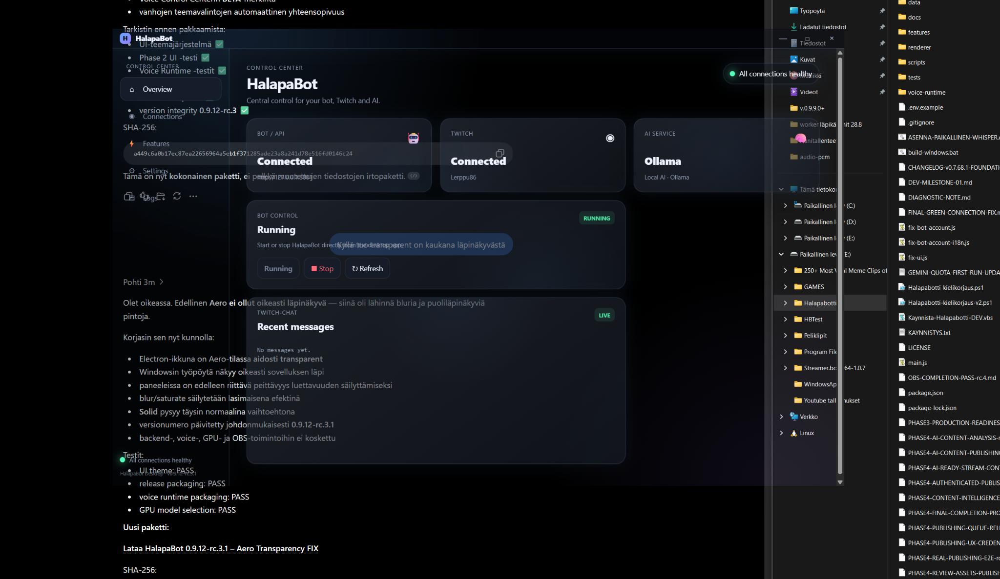
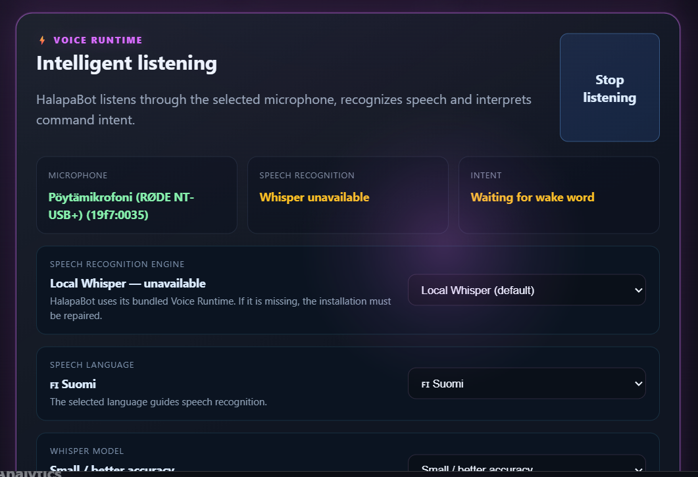
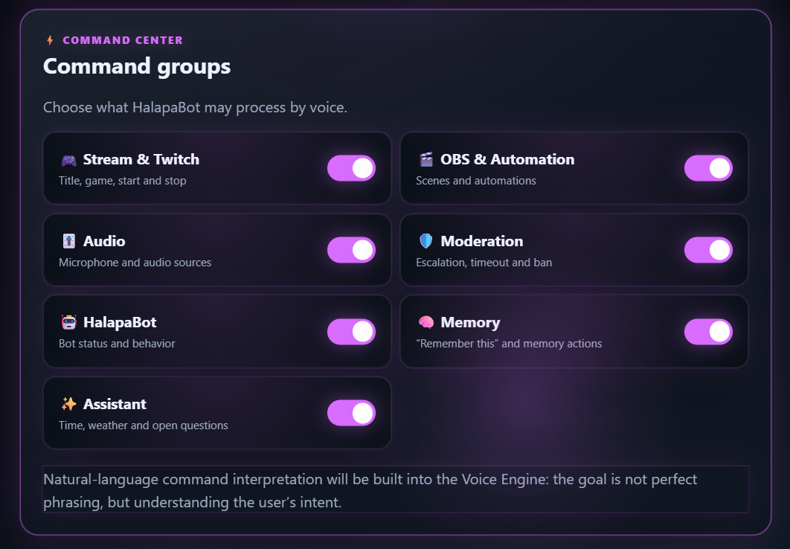
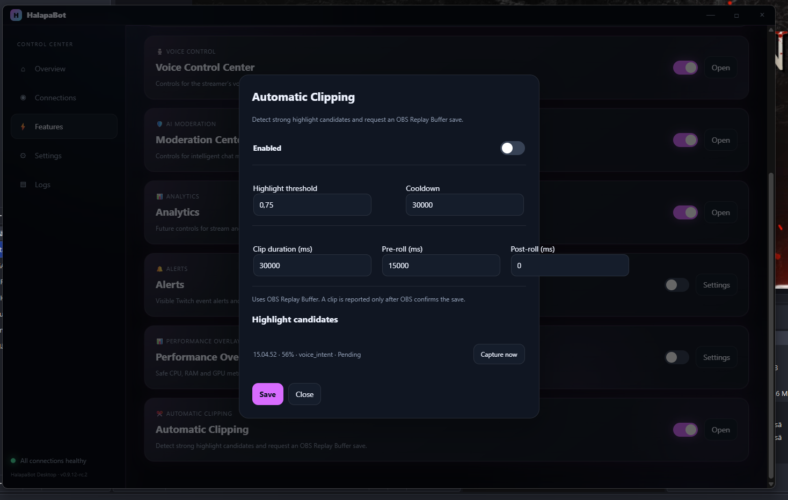
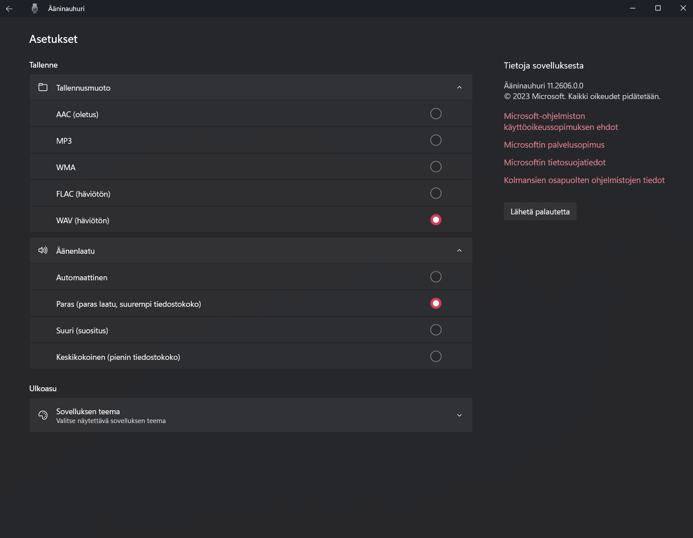

Get HalapaBot ready
The application is a local desktop control center. Start with the connections you actually intend to use, then enable only the feature groups that make sense for your workflow.
Use the normal Windows application build. The Overview screen is the first place to check whether the local API and selected AI service are reachable.
The Connections page separates the streamer account from the bot account. This avoids treating the bot identity and streamer identity as the same credential.
The current desktop UI exposes Google Gemini, OpenAI, Anthropic / Claude and Local LLM (Ollama) as provider choices. Availability depends on the provider credentials and local setup.
Feature groups can be enabled or disabled independently. This is especially important for Voice: disabling OBS commands does not disable the entire Voice Engine.
Connect the services
Connections centralizes the external accounts and AI provider state that HalapaBot needs.
Twitch streamer account
Connect the account whose stream HalapaBot is helping to run.
Twitch bot account
Connect the bot identity used for chat-facing behavior.
AI provider
Select Gemini, OpenAI, Anthropic / Claude or local Ollama according to your setup.
API credential state
The interface reports whether a usable credential is available without exposing the secret itself.
The daily control center
Overview is the fast status surface. It is intentionally not a replacement for the specialized feature windows.

What the cards mean
- Bot / API — local application/API state.
- Twitch — Twitch/EventSub/chat connection state.
- AI service — selected provider and model state.
- Bot control — start/stop the HalapaBot process.
- Recent messages — recent Twitch chat context visible to the operator.
Voice control, with explicit boundaries BETA areas exist
Voice Control Center is designed to turn microphone input into speech recognition and then into command intent. It is not a promise that every noisy or misspelled transcription will be understood perfectly.

Core settings
- Microphone — select the input device.
- Speech language — the language passed to the recognition flow.
- Whisper model — Base, Small, Medium or Large-v3 depending on the current runtime and hardware.
- Execution — automatic selection can use NVIDIA GPU when available.
- Wake phrase — the default wake phrase is “Hei botti”.
- Command groups — determine which categories of voice intent are allowed.

Why the beta label matters
Voice recognition can still produce incorrect transcriptions, especially for game names, scene names, acronyms and phrases where a single character changes the meaning. The product should therefore treat voice as an evolving control surface rather than a guaranteed semantic parser.
OBS control and automatic clipping BETA
OBS-related voice control is separated from the rest of the Voice Engine. This lets the user keep ordinary voice features while disabling the OBS command category.
Automatic Clipping
The current UI describes automatic clipping as detecting strong highlight candidates and requesting an OBS Replay Buffer save. A clip is reported only after OBS confirms the save.

Highlight threshold
Controls how strong a candidate needs to be before it becomes eligible for capture.
Cooldown
Prevents the system from repeatedly requesting captures too close together.
Pre-roll / post-roll
Controls how much surrounding Replay Buffer material is included in the clip.
Candidate states
Pending, capturing, completed, failed, duplicate and rejected states communicate the capture lifecycle.
Memory and history
Memory is there so useful context does not have to disappear when a session ends. The desktop project also contains Content History for locally archived content prepared for manual publishing workflows.
Moderation Center
The moderation workspace is intended for context-aware chat moderation, escalation and moderation actions such as timeout and ban. It is a control surface, not a claim that AI will perfectly understand every community situation.
Escalation
Move from detection toward an action according to the configured moderation flow.
Timeout / ban
Operator-facing moderation actions remain explicit and controllable.
Analytics
Analytics is the dedicated area for stream and chat analysis. Its role is to turn accumulated activity into something the operator can inspect rather than merely generating a response in the moment.
Review before publishing
The current application contains Content Review, Content History and Content Workspace flows. They are designed around local review and approval rather than silently publishing generated content.
Content Review
Edit and approve saved content packages.
Content History
Browse locally archived content and search the history.
Publishing readiness
Check whether a package is ready for the next publishing step.
Manual control
The current translations explicitly state that selecting a content package does not automatically start publishing.
Make the workspace yours

Base themes
The current application exposes four main base themes:
- Dark — the default dark blue interface.
- Ash — charcoal/grey alternative for a less blue dark interface.
- Light — the light interface.
- Summer — the lighter green-oriented seasonal theme.
Accent colors
Midnight, Neon, Aurora, Graphite, Fire and Summer accents are available in the current settings model.
Performance without pretending to be a game hook
The current Performance Overlay exposes CPU, RAM and GPU information as a safe separate overlay. The application explicitly notes that FPS/frametime is not available without game-hooking.
When something does not work
Voice says Whisper is unavailable
Check that the bundled Voice Runtime is present and repaired/installed correctly. Then re-open Voice Control Center and inspect the technical details.
NVIDIA GPU is detected but GPU inference is unavailable
The hardware can be present while the local CUDA runtime is still missing. The application has an explicit GPU setup path; use that rather than modifying the system NVIDIA installation manually.
Voice transcription is wrong
Do not assume the problem is the command parser. Check microphone level, clipping protection, language, model and runtime state first. For OBS commands, remember that the OBS command group is still BETA.
A feature is missing from a fresh installation
Check the installed version and runtime packaging first. The project has dedicated packaging and model-delivery tests for the voice runtime, so a missing runtime component is a packaging/install issue rather than something the user should fix by copying random files.